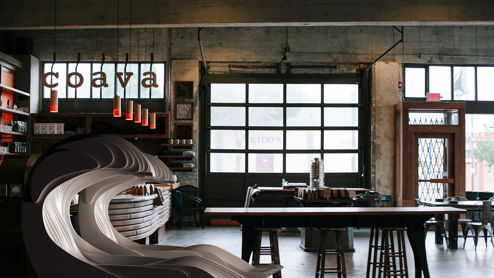
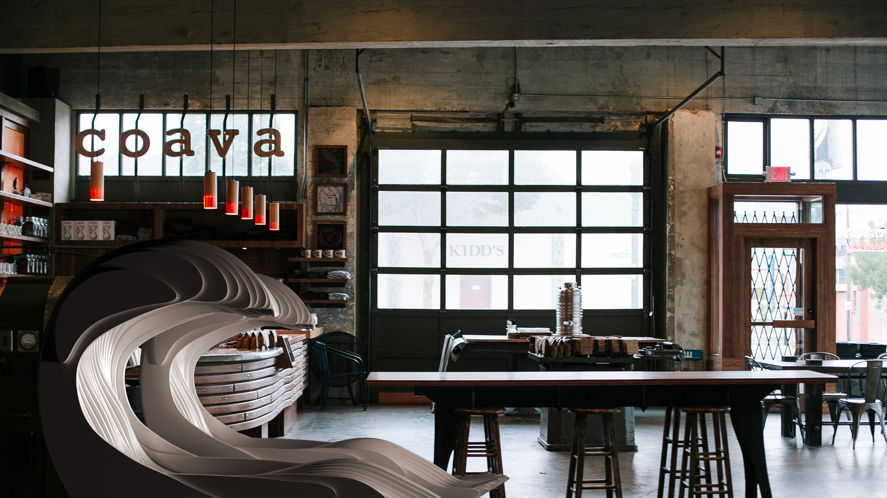

Moment was a 3 week studio project, completed in 2017 at the Harvard Master in Design Engineering program, during our first year Collaborative Design Studio. I worked with a team of 3 - Saad and Nicki - and I'd be remiss to not include them here.
Since our work on moment is actually summarized and packaged nicely in the MDE Health Systems book, I'm including an excerpt of that book here, as well as a link out to the original book if you want to learn more about the studio, and other projects as well.
Here is a link out to just this excerpt if you'd prefer to read this in a native PDF reader:
file here.
Here's a summarized version of our project (a subset of our final presentation)-
Environmental factors measurably impact our well being. By reversing the paradigm and calibrating our environment, we might find ways to reclaim our control over our well being. Inspired by global meditation practices and mindfulness rituals and informed by measured focus patterns in the brain, the Moment chair is an oasis from a busy day, and a ritual to train your focus. Moment is a multi-sensory chair aimed to help individuals focus, based on neural activity models of populations with Attention-Deficit/Hyperactivity Disorder (ADHD). Research shows that individuals with ADHD have a lower beta-to-theta brainwave activity ratio compared to the general population during periods of focus. Based on this cluster of studies, the Moment chair hypothesizes that inducing brain activity to match the general population’s can, in turn, induce focus. It is also possible to modulate brain activity (specifically, the beta-to-theta ratio) by presenting sensory signals to the user at specific target frequencies. Combining these key insights together, the Moment chair uses an array of sensory stimuli to induce brain activity and neural sensors to measure it. With a meditative breath-rate visualization (alongside a series of prompted breathing exercises), scent, light, and sound, the Moment chair is a rich sensory experience and a training ground for improved focus. By crafting the chair with smooth curves, minimally intrusive technology and simplified atmospheric visualizations, the Moment chair is not only a sanctuary, but a productive environment to help users control their state of mind.
In our world of incessant notifications and infinite information and addictive media at our fingertips, our collective ability to concentrate has become eroded. These phenomena combined with desires/pressures to boost cognitive performance have led to record use of addictive stimulant drugs like Adderall and Ritalin. Moment is meant to counteract the discraction and distress of modern times; a drug-free method of boosting performance and concentration that ultimately seeks to help society better control its reactions to the ever-increasing stimuli which surround us. The design concept aims to help us focus on the moments, projects and relationships that are most important.
Immersive sensory elements in mindful, spiritual, and restorative spaces have persisted for centuries. However, the combination of biofeedback and meditative visualizations with sensors that enable users to train themselves towards specific targets, is novel. The Moment chair creates a ritual and seemlessly integrates technology into its design - immersing the user in exercises that can fundamentally change their ability to focus over time. The technology can be calibrated to prepare unique users for deep sleep, alertness and even heightened perception. With rich generated data, we hope to inform scientific research on ADHD to improve diagnosis/tracking.
Despite its technical foundation, the Moment chair abstracts the technology away from the user experience. The Moment chair’s form is guided by smooth curves, specifically designed to immerse, relax and captivate. The sensory elements of the chair (light, aromatherapy, sound and visual cues) are informed by research on their impacts on state of mind, but also by time-tested cultural traditions. Most important, however, is Moment’s attention to the user’s individuality - the chair trains itself for people's different brain activity profiles, routines and needs to function as an accessible daily ritual.
The actual chair and attached hardware perform breath detection, so we can use user input as feedback into a breathing activity that the user engages in, inside the chair. Our approach to breath detection was with IR image capture and basic computer vision techniques to actually detect breath rate. With FFT, we were able to identify a frequency that we then used as an input to power our breathing activity program in real-time.
Above is a basic diagram modeling our breathing detection processing.
Here, several sensory inputs dynamically adjust the breathing activity, and the users' performance in the activity also functions as feedback to the same sensory inputs.
Using empirical data, we identify potential moments of intervention for this breathing exercise during the day for users with ADHD.
Outputs from our breathing activity, demoed here for clarity ( Moment Demo).
Here are some images of the finished chair, prototypes, and work in progress!
 
